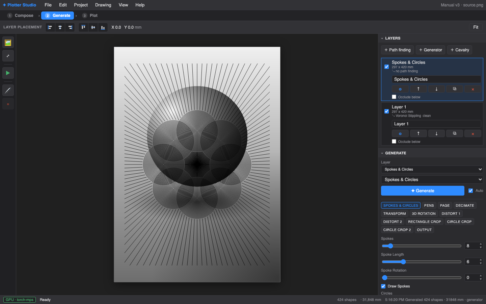

Creating strokes
Two ways to make marks: Path Finding interprets an image; Generate draws from pure rules. Both end up as layers you compose and plot. Every preview on this page is the same shaded sphere — so the algorithms compare honestly.
Path Finding
A style (a path-finding module, PFM for short) reads your image's tone and turns it into plottable geometry. Add one via ＋ Path finding in the Layers panel — the Path Finding window opens with the module picker and its parameters. With Live draft preview on (the default), every change redraws a quick low-resolution sketch after a moment — twiddle freely; Apply / Regenerate renders the real thing at full quality (the status badge stays stale until you do).
Every style shares the same Image group — brightness and contrast applied to the source before generation — so tonal adjustments you learn on one style carry to all of them.
You can pick from the dropdown, or click ▦ Browse styles… underneath it for a visual grid — one preview per module:

Every module has a Seed: the same seed reproduces the same drawing exactly, a different seed re-rolls the randomness. Parameters marked with ◉ can be driven spatially — see Painting with Fields.
Point modules: sampler × style
The biggest group places points where the image is dark, then draws something at or between them. You choose both halves independently. First, the seven styles — what gets drawn (shown here with the Voronoi sampler):


Then the four samplers — where the points go. Same style (stippling), four different point engines:


Line & texture modules


Regions — apply a module to part of the image
The Path Finding window's Region row limits a layer to a piece of the image, selected with on-device AI (SAM 2):
- Click AI select — the viewport switches to region mode.
- Click on the subject. Each click adds a positive point; Alt-click (or right-click) marks what to exclude. The teal preview updates live.
- Name it, optionally invert, and Save. The layer now generates only inside that region.
Different layers can use different regions — stipple the face, hatch the background, engrave the coat. Each region also gives its layer an occlusion silhouette for the Composition step. The first use downloads the SAM model; the panel shows progress.
Generate — drawing without an image
The Generate step makes procedural compositions. Pick a generator, adjust, and it redraws live (toggle auto-redraw off for heavy settings). The result becomes a normal composition layer.

| Generator | What it makes |
|---|---|
| Spokes & Circles | Radiating ray clusters with concentric circles and clean crop-outs — poster-grade geometric pieces, with per-cluster pen cycling. |
| Shape Field | A grid of parametric shapes (circles, polygons, stars, spirals, waves…) with per-tile modulation — scale, rotation and offset swept by row, column, radius, wave or noise. Has its own layer-stack editor. |
Generators honour the page setup and margins, and multiple pens can be cycled across elements — see the Pens section of Plotting.
Iterating honestly
Save Versions liberally (dock, right side): each stores a thumbnail plus the exact module and parameters. When two directions fight, generate both, save both, and look at the thumbnails side by side tomorrow. The seed makes every experiment repeatable.